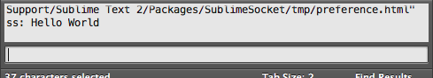
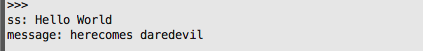

SublimeSocket API Reference 1.1.3
Overview
SublimeTextのAPIを、WebSocket経由で実行するためのサーバです。
SublimeTextのプラグインとして実装されています。
WebSocket(RFC6455)によって、Local, Remoteの環境と組み合わせて動作します。
文章中では、SublimeTextのことをST、SublimeSocketのことをSSと略機することがあります。
用途
・SublimeSocketAPIを組み合わせてReactorをプログラミングし、ST上にログ情報を表示
・ST上での特定のアクションに応じてコンパイル処理を走らせる
・Remote環境のコンパイラとLocal環境のSTの連携
・端末上のWebSocketクライアントとSTの連携
想定している連携例
サーバ側から、Log、StackTrace、SublimeSocketAPIなどの文字列データをSublimeSocketへと送付
↓
SublimeSocketがデータ受信、API受付
↓
SublimeTextに表示、編集アシスト動作
SublimeTextからキーイベント発行
↓
SublimeSocket イベント着火
↓
SublimeSocketからサーバ上のコンパイラにコンパイルオーダー
↓
サーバ側でコンパイル
↓
…
ずっとSublimeTextのターン！！
API記法について
SSJSON (SublimeSocketJSON)
JSONに特定の文字列をつけて、APIの実行キーにしています。
下記の文字で構成された文字列を受け取る事で、APIを実行します。
Prefix
API_PREFIX = "sublimesocket"
API_PREFIX_SUB = "ss"
特にSublimeServer向けの情報である事を示すPrefixです。
ぱっと見で明示するために付いています。
フルに書くのがめんどくさい場合、ssで済ます事が出来ます。
HeaderDelimiter
API_DEFINE_DELIM = "@"
ここから先がAPIのKeys and Values、という事を示すデリミタです。
Concat
API_CONCAT_DELIM = "->"
API同士を接続するデリミタです。
下記のように使用します。
ss@API->API->API
-> で連結したAPIは、記述順を守って実行されます。
Parameters
ss@Command1:JSON
ss@Command1:JSON->Command2:JSON->Command3:JSON,,,
JSON部分の内容は、各APIごとに必須パラメータ名、型が決められています。
また、パラメータ無しのAPIは、JSON部分無しで実行する事が出来ます。
ss@Command1
Comment
API_COMMENT_DELIM = "/"
@とAPI名の間に記述する事が出来ます。/で閉じます。
ss@コメント/API->...
値渡し
Returnが定義されているAPIの場合、
(SourceKey|TargetKey)をAPI名の前に書く事で、直前のAPIの結果値を渡すことが出来ます。
1.0では特定APIにしか対応していませんが、1.1では全APIで対応する予定です。
ss@commandA:{"key1":"value"}->(key1|key2)commandB:{"key2":"will be replaced."}
commandA の key1 に入った値を、commandB の key2 へと入力して実行します。
Sample API
下記は、STのログに "Hello World" を出すAPIのサンプルです。
ss@ハローワールドです/showAtLog:{"message":"Hello World"}
色々なAPIを、SublimeSocket Test Console で試す事が出来ます。
CommandPalette -> "SublimeSocket: on > open preference" で、SublimeTextからSafariなどブラウザが起動します。

input に対してss@showAtLog:{"message":"Hello World"}を入力した状態でInputボタンを押すと、SublimeText内のコンソールに ss:Hello World と表示されているはずです。

API Reference
versionVerify
Client側から想定しているST、SSのVersionを入力し、SSのVersion、SSのAPIVersionとの整合性チェックを行います。
SSには、SS自体のversion と、SSのAPIのversionの２つのレイヤーがあります。
SSのversion = SublimeText 2 or 3 のどちらに対応しているか
SSAPIのversion = SublimeSocket API のversion
socketVersion[string]
Client側が想定しているSublimeSocketのversionの文字列です。"major.minor.changeLevel"
Client側の指定したversionと一致しない場合、そのクライアントとのコネクションは切断されます。
apiVersion[bool]
Client側が想定しているSSAPIのversionの文字列です。 "major.minor.changeLevel"
以下のケースが発生します。
major version について
client < server で切断、clientのupdateを促す
client = server でminorのチェックに入る
client > server で切断、SSのupdateを促す
minor version について
client < server で、OK、かつclientのupdateを促す(可能であれば)
client = server で、OK。
client > server で切断、SSのupdateを促す
e.g.
ss@versionVerify:
{
"socketVersion": "0.0.1",
"apiVersion": "0.0.1"
}
runSetting
テキストファイルとして保存されているAPIを読み込み、実行します。
path[string]
読み込むファイルのパスです。
SUBLIMESOCKET_PATH:と付ける事で、SublimeSocketフォルダ内を参照するようにショートカットができます。
e.g. /Users/someone/Desktop//UnityFilter.txt ファイルを読み込み、APIとして実行
ss@runSetting:
{
"path": "/Users/someone/Desktop/UnityFilter.txt"
}
inputIdentity
SublimeSocket WebSocketのコネクションに名前をつける事が出来ます。
id[string]
コネクションに付ける名前です。
SSを中継して他Clientにメッセージを送る際などの宛名に使用します。
e.g. 送付元のClientのidをmyClientにする。
ss@inputIdentity:{"id":"myClient"}
tearDown
SSのWebSocket service を終了します。
e.g. SSのサーバを落とす。
ss@ tearDown
(バグがあり、socket自体はそのまま生存、address already use が出てしまう 2013/04/05 10:35:52)
setReactor
SublimeSocketに対して、特定のEventが発生した場合に動く、Reactorをセットします。
eventとtargetの組み合わせによって、特定のEventに対して複数の動作をセットすることが可能です。
event[string]
監視する対象のEvent名 "on_modified", "on_selection_modified", "on_pre_save", "on_post_save" など、
SublimeTextが発行するものと、
"event_"で始まる語句で、独自のイベントを定義できます。
target[string]
Reactorの識別に使用します。
異なるtargetを設定する事で、同じEventに対して複数のReactorをセットする事が出来ます。
selectors[JSONArray[JSONObject[string:any]]]
Event発生時に動作するAPIを記述できます。
記述はJSONの配列形式で、APIのCommand部分を文字列キーにしたJSonObjectが使えます。
interval[int]
実行間隔の数値です。
0であればセット直後に一度だけ対象Eventの発生をチェックします。
0以外の正の数であれば、ミリ秒ごとに対象Eventの発生をチェックします。
replacefromto[JSONObject[string:string]]
Reactor発生時、Eventの持つパラメータを、selectorで指定したAPIに適応させる事が出来ます。
{key:value}に対して、 Eventの持つkey名のパラメータの値を、selector内のvalue名のパラメータの値にします。
e.g. 選択範囲が更新されたら、STのログにHello Worldと表示する。1秒ごとに実行される
ss@setReactor:
{
"target": "sublimesocketpreference",
"event": "on_selection_modified",
"selectors": [
{
"showAtLog": {
"message": "Hello World"
}
}
],
"replacefromto": {
"view": "view"
},
"interval": 1000
}
setFoundationReactor
ST上で発生する特殊なEventに対してReactorをセットします。
Eventについては下記EventReference参照
event[string]
対象Event名です。”ss_f_noViewFound” などが該当します。
あるビュー(ファイル)に対する操作が発生したとき、そのビューが現在開かれていない際に発行されます。
条件があり、
・defineFilterが定義済み
・そのfilterにヒットするfilteriingが流入し
・対象ビューが探知できなかった
場合に発生します。
selectors
replacefromto
同 setReactor
e.g. Reactorセット後、フィルタ定義をし、そのフィルタにヒットするも該当するビューが開かれていない場合、STログにHello Worldを出力する。
ss@setFoundationReactor:
{
"event": "ss_f_noViewFound",
"selectors": [
{
"showAtLog": {
"message": "Hello World"
}
}
]
}
->defineFilter:
{
"name": "04/04/13 23:30:08",
"patterns": [
{
"something": {
"selectors": [
{
"showAtLog": {
"message": "Hello World"
}
}
]
}
}
]
}
->filtering:
{
"name": "04/04/13 23:30:08",
"source": "something"
}
kvs
SS内のKey value storeを扱うAPIです。
内部的にはPythonの辞書で実装されています。 この機能の実装は、そのまま別のKVSへとすげ替える事を念頭に隔離して実装されています。
showAll[string]
全パラメータを文字列にSerializeしてClientへと返します。
valueの意味はありません。
showValue[string]
valueにしたパラメータをkeyに持つ値を返します。
辞書や配列の場合、Serializeしたものを返します。
removeValue[string]
valueにしたパラメータをkvsから削除します。
clear[string]
kvsを空にします。
valueの意味はありません。
e.g. kvsを空にする。
ss@kvs:
{
"clear": "true"
}
defineFilter
SSへとデータが流し込まれた際に反応するフィルタを定義します。
定義されたフィルタはkvsへと保存され、特定のデータに対して反応します。
name[string]
フィルタをidentifyするための文字列です。
filtering APIと合わせて使用します。
patterns[JSONArray[JSONObject[string:any]]]
正規表現をkeyにしたJSONObjectの配列です。
keyにマッチするデータが流入した場合、value内のselectorsがAPIとして発生します。
複数の正規表現を書いた場合、配列順に実行されます。
複数のフィルタにマッチすることを許します。
e.g. 2013/04/04 23:30:08 という名前で、somethingで始まるデータが流入した場合、STログにHello World を出力する。
ss@defineFilter:
{
"name": "04/04/13 23:30:08",
"patterns": [
{
"^something": {
"selectors": [
{
"showAtLog": {
"message": "Hello World"
}
}
]
}
}
]
}
filtering
SSへとデータを流し込むAPIです。
任意の文字列データをClientからSSへと流し込みます。
name[string]
ターゲットとなるフィルタをidentifyする文字列です。
事前にdefineFilterでセットされている必要があります。
source[string]
文字列データです。
APIの都合上、JSONで扱えない文字と、-> (-と>の連続) が入っている文字列を扱う事が出来ません。
これらは事前にパースするとかでなんとかしてください。
debug[bool]
デバッグ用パラメータです。
セットされている場合はvalueに応じてデバッグ表示がSTのログに出力されます。
e.g. 2013/04/04 23:30:08 という名前が付けられたフィルタに対して、something という文字列を出力する。
ss@filtering:
{
"name": "04/04/13 23:30:08",
"source": "something"
}
containsRegions
通常、setReactorに内包して使用します。
特定のview(STで開かれているファイル)について、Reactorが指定したEventが発生したタイミングで、
エディタの選択範囲にSTのRegionが存在する場合、emitキーワードで指定したEventを発行します。
発行できるEventは、"event_" 句で始まっていればOKで、自由に定義できます。
Eventについては下記EventReference参照
view[string]
viewのファイルのパスです。
target[string]
この文字列をtargetとして持つsetReactorへと、Eventを発行します。
emit[string]
Event名の文字列です。
event_で開始していればOKです。 event_errorEmitted などが指定できます。
debug[bool]
デバッグ用パラメータです。
セットされている場合はvalueに応じてデバッグ表示がSTのログに出力されます。
e.g. ファイル /Users/USERNAME/Library/Application Support/Sublime Text 2/Packages/SublimeSocket/SublimeSocketAPISettings.py に対して、
10行目にRegionが表示されます。

そのRegionをカーソルが選択範囲に含んだ際、
sublimesocketpreference というtargetをもち、event_errorEmitted Eventに反応するReactorに対して、Eventを発行します。
viewパラメータは something Reactorのreplacefromtoによって、on_selection_modifiedが発生したviewへと置き換えられます。
Event発行後、event_errorEmitted に反応するReactorが発生し、Hello WorldがSTのログに出力され、 appendRegionの内容が実行されます。

ss@setReactor:
{
"target": "sublimesocketpreference",
"event": "on_selection_modified",
"selectors": [
{
"containsRegions": {
"view": "will be replace to specific view",
"target": "sublimesocketpreference",
"emit": "event_errorEmitted",
"debug": true
}
}
],
"replacefromto": {
"view": "view"
},
"interval": 1000
}
->setReactor:
{
"target": "sublimesocketpreference",
"event": "event_errorEmitted",
"selectors": [
{
"showAtLog": {
"message": "Hello World"
}
}
]
}
->appendRegion:
{
"view": "/Users/USERNAME/Library/Application Support/Sublime Text 2/Packages/SublimeSocket/SublimeSocketAPISettings.py",
"identity": "03/12/13 18:46:17",
"line": 10,
"message": "herecomes daredevil",
"condition": "keyword"
}
collectViews
STが開いているviewを収集し、kvsに保存します。
特にパラメータはありません。
SS起動時に自動的に呼ばれます。
→SS起動時に自動的に実行されるAPIは、SSパッケージ内の SublimeSocket.sublime-settings に記述されています。
"loadSettings" : ["collectViews"]
e.g. ST上で開いているviewを収集する。
ss@collectViews
runShell
SSからPythonを経由してシェルスクリプトを実行します。
bashなどの環境変数は引き継がれません。
main, delay, debug 以外の文字列 "-a" や "something" などは、 そのままコマンドラインで実行されます。
☆shell実行する都合上、value側に含まれるスペースを含む文字列 "a peaceful journey" などは、spaceが_に変換されます。
他にも、"[" -> "", "]" -> "", "@s@s@" -> " " へと変換が発生します。
たとえばspaceを表示したい場合、SSへと入力する前の段階で、@s@s@ などに変換しておく必要があります。
これは " をエスケープして文字列を囲んだ場合でもきちんと発生します。
main[string]
コマンドラインの先頭に入る文字列です。
delay[int]
指定ミリ秒後に実行します。
debug
デバッグ用パラメータです。
セットされている場合はvalueに応じてデバッグ表示がSTのログに出力されます。
上記以外のkey[any]
value部分には、string, int, bool のほか、 JSONArray[any] の指定が可能です。
JSONObject形式で書いた場合、順がシャッフルされる可能性に注意してください。
また、key、valueともに、空文字の指定が可能です。
e.g. ruby gems "terminal-notifier"を実行します。文字列中のspaceは、_に強制的に変換されます。
JSONObject版 key value の内容が、コマンドラインのパラメータとして実行されます。key-valueペアの順は守られますが、ペア同士がどの順で記述されるかは未定義です。
ss@runShell:
{
"main": "terminal-notifier",
"-message": "\"Hello, this is my message\"",
"-title": "\"Message Title\"",
"-execute": "\"open -a 'Sublime Text 2.App'\"",
"debug": true
}
JSONArray版 terminal-notifier -message "Hello,_this_is_my_message" -title "Message_Title" -execute "open_-a_'Sublime Text 2.App'" が実行されます。
ss@runShell:
{
"main": "terminal-notifier",
"-message": [
"\"Hello, this is my message\"",
"-title",
"\"Message Title\"",
"-execute",
"\"open -a 'Sublime Text 2.App'\""
],
"debug": true
}
broadcastMessage/monocastMessage
SSを介して、他のClientへとWebSocket経由でメッセージを飛ばします。
target
monocastMessageの場合のみ有効な、送付先のIdentityです。
inputIdentity を使う事で、Client側が自己申告できます。
実行時点でSS上に存在しないidentityを指定した場合、エラーが発生します。
message[string]
Clientへと送付される文字列です。
sender[stirng]
オプションです。
送付元の情報をidentifyする事が出来ます。
このキーがあることで、Clientへと到達する情報は、
senderのvalue:messageのvalue になります。
e.g.
ss@monocastMessage:
{
"message": "here comes Daredevil! for only one",
"target": "sublimesocketpreference"
}
showAtLog
文字列をSTのログに出力します。
主にユーザーへの通知や、動作確認に使用します。
message[string]
ログに出力される文字列です。
e.g.
ss@showAtLog:{"message":"Hello World"}
appendRegion
STで現在開かれている特定のviewへと、Region(四角形)を表示します。
情報はkvsのSUBDICT_REGIONS下に保存されます。 eraseAllRegions が発生したタイミングで、削除されます。
メッセージ情報他を埋め込むことができます。
view[string]
ファイル名を含むpathです。
フルパスが存在する場合、そのままviewを特定する要素として使用されます。
フルパスでない場合、適当に推測します。
最低でもファイル名.拡張子を含んでいる必要があります。
該当するviewがSTのview上に発見できなかった場合、”ss_f_noViewFound” Eventを発行します。
line[int]
Regionを表示する行番号です。
message[string]
Regionに保存する文字列データです。
condition[string]
Regionのカラーリングを決定するパラメータです。
STのColor Schemeと連動しています。
SSでは、適当ですが、 keyword パラメータをError用、string パラメータをCaution用に使用しています。
e.g. ファイル /Users/USERNAME/Library/Application Support/Sublime Text 2/Packages/SublimeSocket/SublimeSocketAPISettings.py に対して、
10行目にRegionが表示されます。

ss@appendRegion:
{
"view": "/Users/USERNAME/Library/Application Support/Sublime Text 2/Packages/SublimeSocket/SublimeSocketAPISettings.py",
"identity": "03/12/13 18:46:17",
"line": 10,
"message": "herecomes daredevil",
"condition": "keyword"
}
runWithBuffer
SublimeTextでのファイル編集中のバッファを制御するために使用します。
他のAPIからviewを受け取り、そのviewのバッファに対して、ss_f_runWithBuffer イベントを発生させます。
view[sublimetext_view_instance]
SublimeTextのviewオブジェクトです。
インスタンスのため、APIから直に指定する事はできません。
e.g. 選択範囲が変更された際、現在のビューのバッファを ss_f_runWithBuffer イベントのReactorへと送付します。
ss_f_runWithBuffer イベントのReactorがセットされていなければ何も発生しません。
ss@setReactor:
{
"target": "sublimesocketpreference",
"event": "on_selection_modified",
"selectors": [
{
"runWithBuffer": {
"view": "will be replace to specific view"
}
}
],
"replacefromto": {
"view": "view"
},
"interval": 100
}
notify
MacのNotificationCenterを起動し、任意の文字列を表示します。

title[string]
タイトル用の文字列です。
message[string]
メッセージ用の文字列です。
"_"を" "(space)に勝手に変換します。
debug
デバッグ用パラメータです。
セットされている場合はvalueに応じてデバッグ表示がSTのログに出力されます。
e.g.
ss@notify:
{
"title": "title-is-here",
"message": "message-of-nyaaa"
}
補記： Linux、Windowsのことは考えずに作りましたが、下記サンプルでgrowlでの通知が可能です。
ss@runShell:
{
"main": "/usr/local/bin/growlnotify",
"-m": "message!",
"-t": "Saved!",
"-a": "\"Sublime Text 2\"",
"debug": true
}
getAllFilePath
anchorに指定されたファイルを検索し、検索ヒット後、
ancorファイルがあるフォルダとその下のフォルダ内のすべてのファイルの絶対パスを,で連結した文字列をpathsに保持します。
anchor[string]
検索する対象のファイル名です。現在のSublimeTextのWindowBasePathを基準に、ファイルを上位階層へと探しに行きます。
特にリミットが無いため、間違えると永遠に上位フォルダへ検索の手を伸ばします。
header[string]
検索ヒット後、結果の文字列のfooterとして、pathsの前部に接続されます。
footer[string]
検索ヒット後、結果の文字列のfooterとして、pathsの後部に接続されます。
paths[string]
検索ヒット後、ヒット時のフォルダ以下にあるファイルすべてのpathを,で連結した、
header+連結済みpath+footer という状態の文字列を保持します。
e.g. readme.txtというファイルを検索し、そのファイルがあるフォルダ以下のすべてのファイルの絶対パスを,で連結した文字列をpathsに格納、
monocastMessageでクライアントへと送付します。
ss@getAllFilePath:
{
"header": "header:",
"anchor": "readme.txt",
"footer": "footer",
"paths": "will be entered"
}
->(paths|message)monocastMessage:
{
"message": "replace",
"target": "sublimesocketpreference"
}
RESPONSE: header:/Users/sassembla/Library/Application Support/Sublime Text 2/Packages/SublimeSocket/tmp/preference.html,/Users/sassembla/Library/Application Support/Sublime Text 2/Packages/SublimeSocket/tmp/readme.txtfooter
readFileData
特定pathのファイルのデータを読み込みます。
path[string]
読み込み対象となるファイルのパス
data[string]
読み込んだデータが入力されます。
e.g. PythonSwitch.py というデータを読み出し、
monocastMessageでクライアントへと送付します。
ss@readFileData:
{
"path": "/Users/sassembla/Library/Application Support/Sublime Text 2/Packages/SublimeSocket/PythonSwitch.py",
"data": "will be entered"
}
->(data|message)monocastMessage:
{
"message": "replace",
"target": "sublimesocketpreference"
}
RESPONSE: class PythonSwitch(object): def __init__(self, value): self.value = value self.fall = False def __iter__(self): """Return the match method once, then stop""" yield self.match raise StopIteration def match(self, *args): """Indicate whether or not to enter a case suite""" if self.fall or not args: return True elif self.value in args: # changed for v1.5, see below self.fall = True return True else: return False
eventEmit
独自定義のイベントを定義、発行します。
このAPIで着火できるイベントは、ユーザー定義イベントに限られます。
target[string]
Eventのターゲット指定に使用する文字列です。
event[string]
発行するEvent名です。
e,g, MyTarget の event_MyEventというイベントに対するreactorをセットし、eventEmitでそのイベントを着火します。
ss@setReactor:
{
"target": "MyTarget",
"event": "event_MyEvent",
"selectors": [
{
"monocastMessage": {
"message": "eventEmit over.",
"target": "sublimesocketpreference"
}
}
]
}
->eventEmit:
{
"target": "MyTarget",
"event": "event_MyEvent"
}
RESPONSE: eventEmit over.
openPage
SublimeTextと接続された状態のHTMLをブラウザで開きます。
HTMLはプラグイン内の tmp フォルダに、identity.htmlとして出力されます。
展開されたページは、SublimeSocket経由のmessageをログとしてHTMLに表示します。
Preferenceページの
identity[string]
展開されるページのWebSocketとしてのidentity指定です。
e.g. 06_10_13_14_32_08 というidentityを持ったページをブラウザで開きます。
展開されたページへは、monocastMessage, broadcastMessageでメッセージを届けることができ、HTML上に表示されます。
ss@openPage:
{
"identity": "06_10_13_14_32_08"
}
setWindowBasePath
SublimeTextで現在開いているファイルの位置を、SSのフォルダ検索の基準位置としてセットします。
ST2とST3で挙動が異なる(ST2だと非同期、ST3だと同期)
特にパラメータはありません。
Event Reference
各Eventについて、setReactor APIでReactorをセットする事が出来ます。
setReactorでcaptureできる各Eventが保持するパラメータについては、各Eventの項を確認してください。
SublimeText-Event
SublimeTextから発生するEventは下記になります。 発生タイミングなどの詳細は、同名のSublimeTextのAPI Referenceを参考にしてください。
on_selection_modified,
on_pre_save,
on_post_save,
on_modified
これらのEventは、Reactorのinterval指定に従って発生判定を行っています。
一定時間内に複数回発生したとしても、最後に発生したEventのみが、intervalに合わせて処理されます。
REACTIVE_RESERVED_INTERVAL_EVENT = ["on_modified", "on_selection_modified", "on_pre_save", "on_post_save"]
Event params
すべてのEventが下記paramを発行します。
setReactorでは下記paramをreplacefromtoで転用可能。
view[sublimetext_view_instance]
SublimeText view
viewId[int]
SublimeText view.view.id()
bufferId[int]
SublimeText view.buffer_id()
path[string]
SublimeText view.file_name()
basename[string]
os.path.basename(view.file_name())
vname[string]
SublimeText view.name()
SublimeSocket-Event
SublimeSocketから発生するEventは下記になります。
foundation series
emitEventなどでClientから発行することは不可能です。
setReactorに対して設定してください。
ss_f_noViewFound
appendRegion API使用時、該当のviewがSTのview内に存在しない = ファイルが開かれていない場合に発行されます。
発生したタイミングで、Reactorが反応します。
message[string]
view[string]
line[string]
condition[string]
パラメータはすべて、appendRegion APIへと入力された値が使用されます。
e.g. パラメータ例
{
"view": "/Users/USERNAME/Library/Application Support/Sublime Text 2/Packages/SublimeSocket/SublimeSocketAPISettings.py",
"identity": "03/12/13 18:46:17",
"line": 10,
"message": "herecomes daredevil",
"condition": "keyword"
}
ss_f_runWithBuffer
runWithBuffer イベントの発生を受けて発生します。
runWithBuffer イベント発生時のviewパラメータを受け取り、バッファ上のデータをbodyパラメータに格納します。
target[string]
view[string]
body[string]
path[string]
パラメータはすべて自動的に入力されます。
e.g. 選択範囲が変更されると、そのビューのバッファの情報をbodyパラメータに格納し、monocastMessageでクライアントへと送付します。
サンプルとして、ファイル Default.sublime-commands を開いた状態で選択範囲を変更した際のRESPONSEを載せておきました。
ss@setReactor:
{
"target": "sublimesocketpreference",
"event": "ss_f_runWithBuffer",
"replacefromto": {
"body": "message"
},
"selectors": [
{
"monocastMessage": {
"message": "replace",
"target": "sublimesocketpreference"
}
}
]
}
->setReactor:
{
"target": "sublimesocketpreference",
"event": "on_selection_modified",
"selectors": [
{
"runWithBuffer": {
"view": "will be replace to specific view"
}
}
],
"replacefromto": {
"view": "view"
},
"interval": 100
}
RESPONSE: [ { "caption": "SublimeSocket: on", "command": "socketon" }, { "caption": "SublimeSocket: on > open preference", "command": "on_then_openpref" }, { "caption": "SublimeSocket: open preference", "command": "openpreference" }, { "caption": "SublimeSocket: status", "command": "statuscheck" }, { "caption": "SublimeSocket: off", "command": "socketoff" } ]
user-defined series
”event_”句から始まるユーザー独自定義のイベントを、emit パラメータがあるAPI経由か、emitEvent で発行することが可能です。
すべてのEventは、emit元が持つパラメータを持ちます。
e.g.
event_myEvent
event_emitHelloWorld
など、event_が付けばなんでもOKです。
saveなどのユーザー動作と組み合わせたEventの例
・setReactorでユーザーの on_post_save を監視
→発生時に動作するEventをselectorに定義
e.g. setReactorを使い、on_post_save Event発生時に、Hello World とSTのログへと出力します。
ss@setReactor:
{
"target": "sublimesocketpreference",
"event": "on_post_save",
"selectors": [
{
"showAtLog": {
"message": "Hello World"
}
}
],
"interval": 1000
}
ユーザーによる範囲選択動作とRegionの選択を組み合わせたEventの例
・setReactorでユーザーの on_selection_modified Event を監視
→selector中で、containsRegions API をセット、
該当するview範囲に既設のRegionが含まれているかどうかチェックし、
適当なEventをemit
・setReactorで上記セットしたEventを監視
→selector中で任意の動作を行う
e.g. appendRegionで実際にRegionを発生させるサンプル。
on_selection_modifiedに反応するReactor内で、既設のRegionへの反応を記述。範囲がRegionを含んでいた場合、event_errorEmitted Eventを発行。
event_errorEmitted Eventが発行された場合、対応するReactorにて、showAtLogが発生する。
ss@setReactor:
{
"target": "sublimesocketpreference",
"event": "on_selection_modified",
"selectors": [
{
"containsRegions": {
"view": "will be replace to specific view",
"target": "sublimesocketpreference",
"emit": "event_errorEmitted",
"debug": true
}
}
],
"replacefromto": {
"view": "view"
},
"interval": 1000
}
->setReactor:
{
"target": "sublimesocketpreference",
"event": "event_errorEmitted",
"selectors": [
{
"showAtLog": {
"message": "Hello World"
}
}
]
}
->appendRegion:
{
"view": "/Users/sassembla/Library/Application Support/Sublime Text 2/Packages/SublimeSocket/SublimeSocketAPISettings.py",
"identity": "03/12/13 18:46:17",
"line": 10,
"message": "herecomes daredevil",
"condition": "keyword"
}
サンプルフィルタ
いくつか、サンプルのフィルタがあります。
TypeScript用のフィルタ
SublimeSocket/FilterSettingSamples/TypeScriptFilter.txt
tscが出力するログに対して、エラー行を表示しています。
すべてフィルタやReactorで書かれています。
API runSettingで読み込むとそのまま使える状態ですので、がんばってみてください。